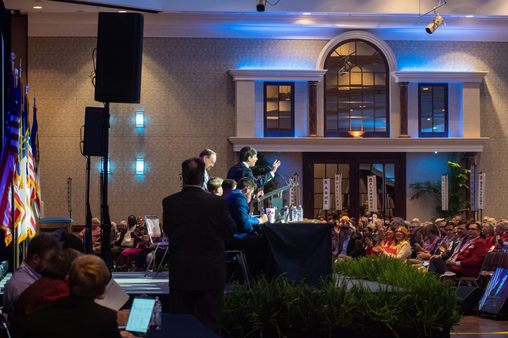

About CODY
Cody grew up in suburban Cincinnati before moving to North Carolina in 2016, where he discovered a true passion for music. After years of playing drums, he took on leadership roles in his church and school bands and initially planned to pursue a music degree after attending Appalachian State University. Instead, he shifted to Political Science and stepped outside his comfort zone, eventually serving in local, state, and national leadership roles across political organizations and nonprofits. He now lives in Washington, D.C., working in political digital marketing.
Contact Me

Media Features

Portfolio